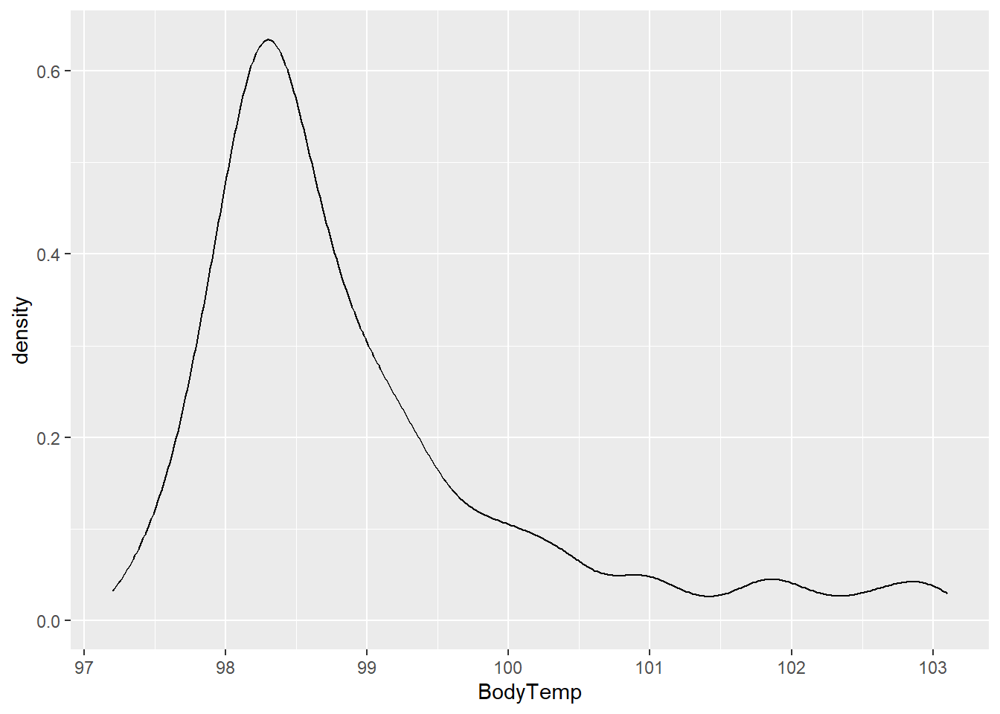
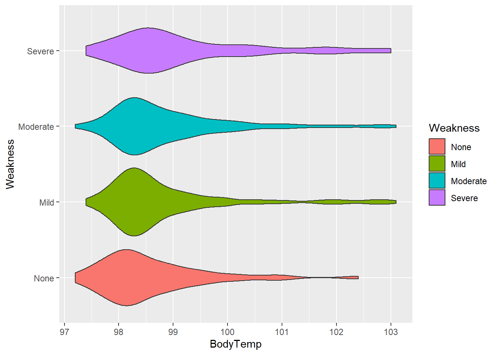
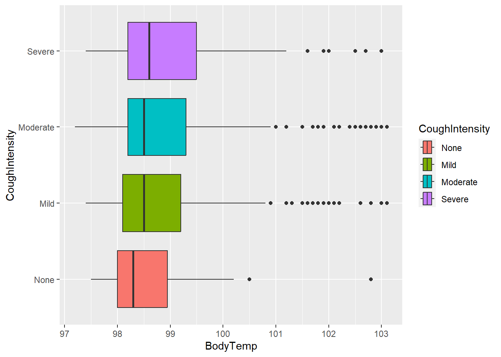
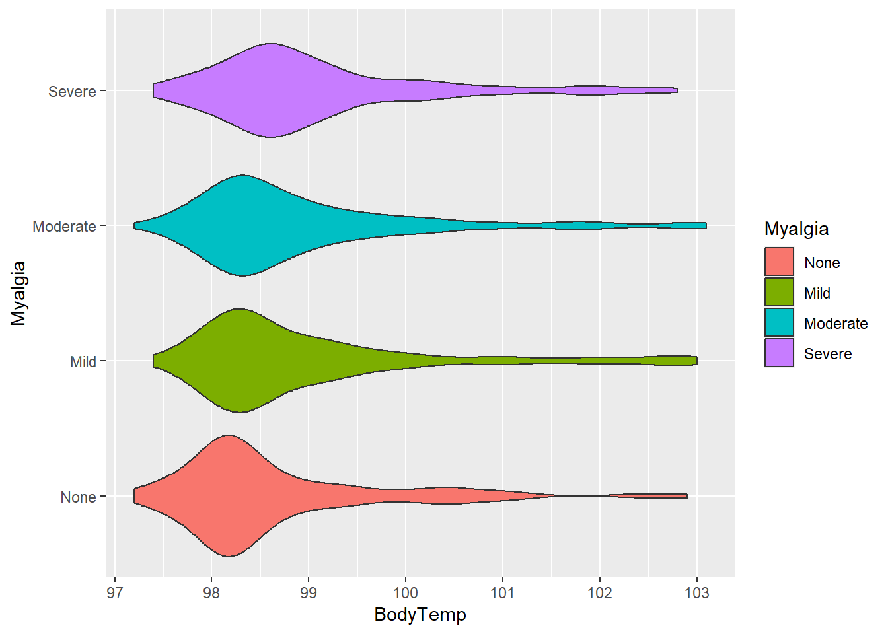
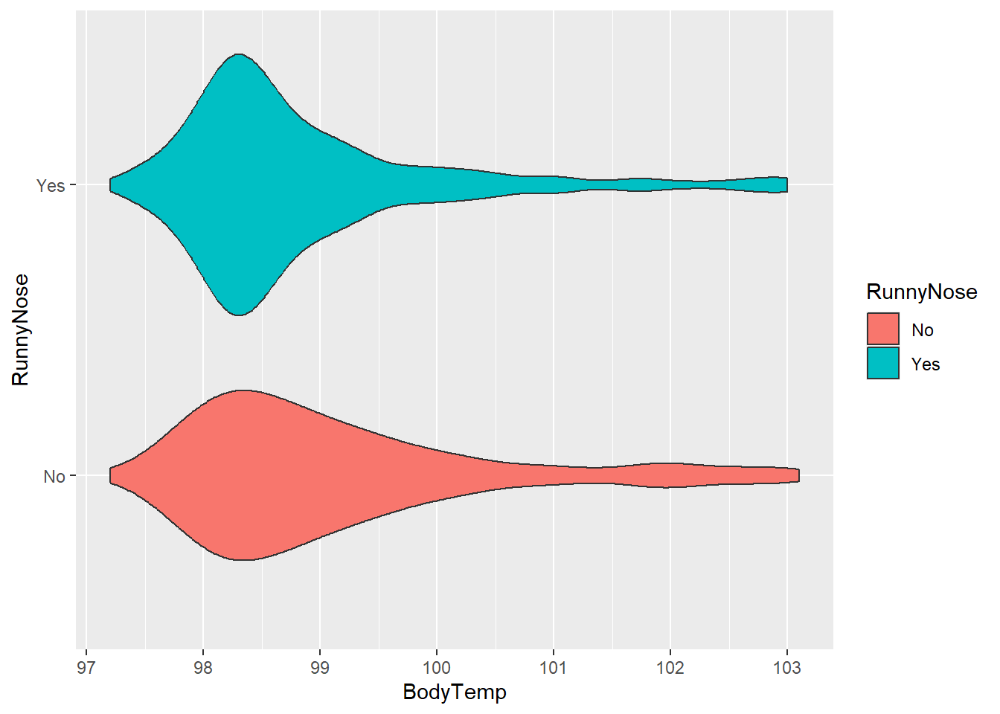
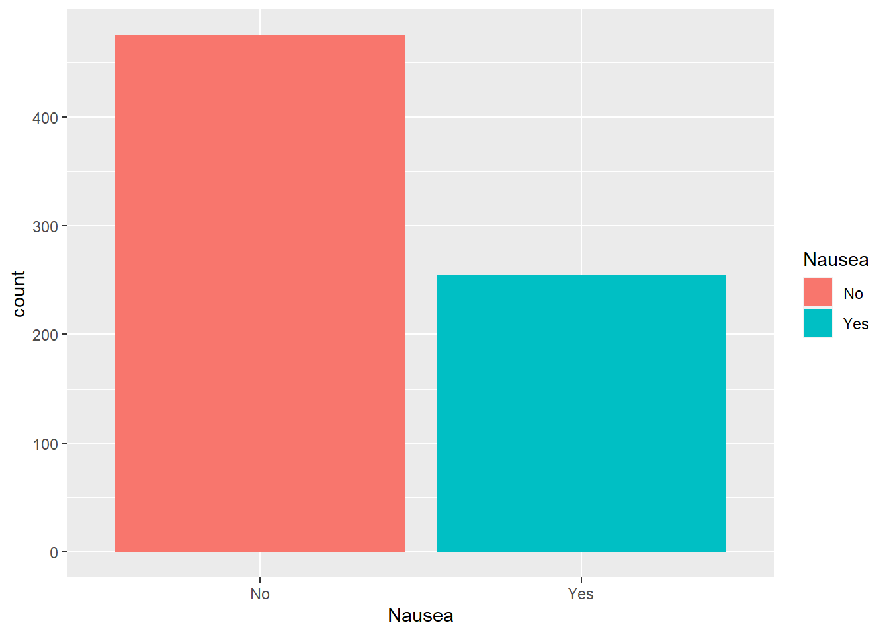
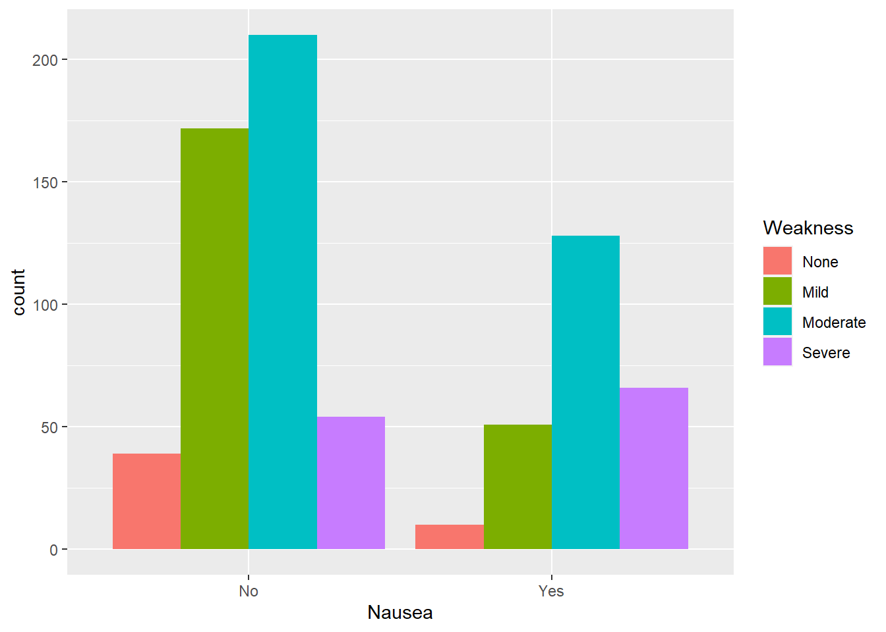
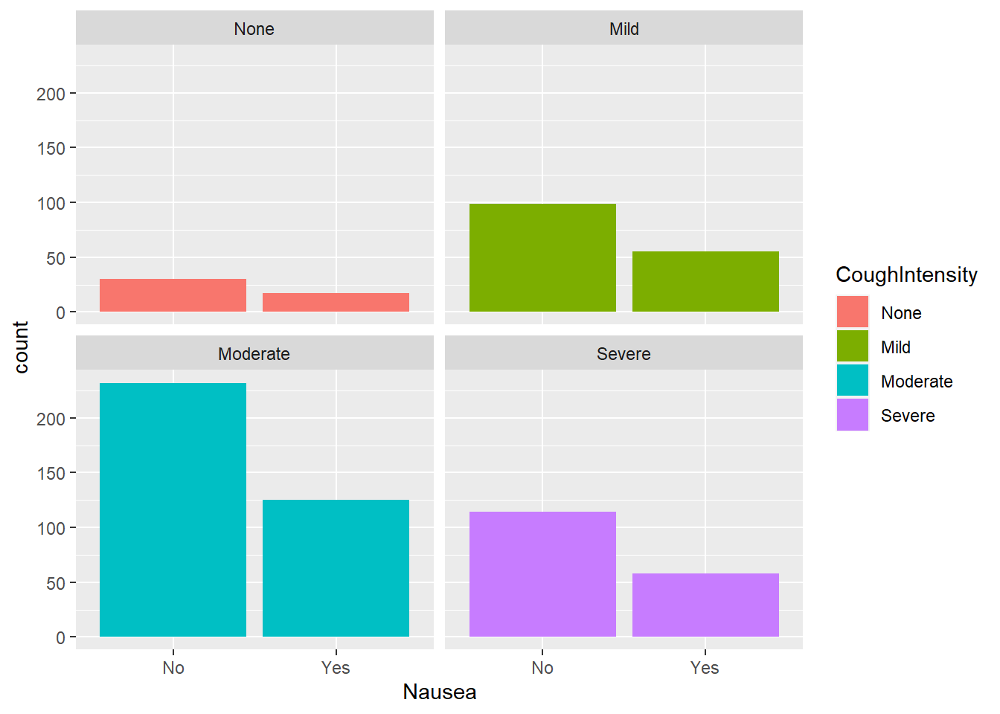
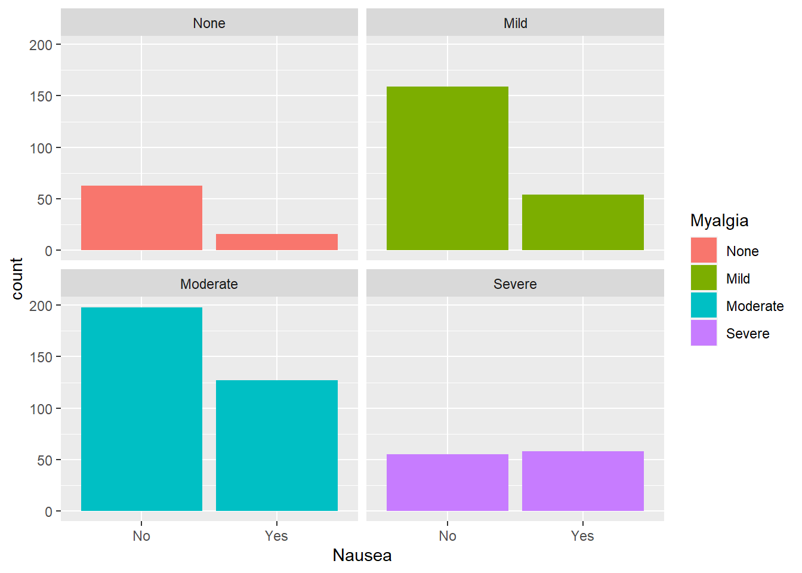
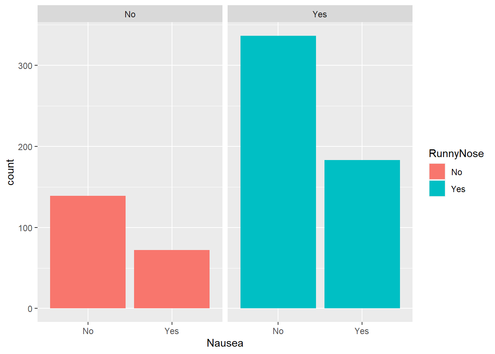

library(tidyverse)
library(ggplot2)
library(here)
library(gtsummary)Exploration
This exercise is the second in the flu analysis series. This page loads the cleaned data, explores the main outcomes (body temperature and nausea) and main predictors (Weakness, CoughIntensity, Myalgia, and RunnyNose) through data summary and visualizations.
The Wrangling script cleaned the raw data from the flu analysis. We will explore the data and look at the symptomatic variables. The main outcomes of interest are Body Temperature and Nausea. The other symptoms will be considered for predictors.
Load packages
Load data
We will load the cleaned data from the data folder. To make coding easier, let’s rename cleandata as flu
#load cleaned data
filelocation <- here("fluanalysis", "data", "cleandata.rds")
load(filelocation)
#rename dataset
flu <- cleandataOverview of data
First, we can look at the proportion of responses that said they had the symptom using tbl_summary() function from the gtsummary package.
#create summary table
sumtable <- tbl_summary(flu)
sumtable| Characteristic | N = 7301 |
|---|---|
| Swollen Lymph Nodes | 312 (43%) |
| Chest Congestion | 407 (56%) |
| Chills/Sweats | 600 (82%) |
| Nasal Congestion | 563 (77%) |
| Sneeze | 391 (54%) |
| Fatigue | 666 (91%) |
| Subjective Fever | 500 (68%) |
| Headache | 615 (84%) |
| Weakness | |
| None | 49 (6.7%) |
| Mild | 223 (31%) |
| Moderate | 338 (46%) |
| Severe | 120 (16%) |
| Cough Severity | |
| None | 47 (6.4%) |
| Mild | 154 (21%) |
| Moderate | 357 (49%) |
| Severe | 172 (24%) |
| Myalgia | |
| None | 79 (11%) |
| Mild | 213 (29%) |
| Moderate | 325 (45%) |
| Severe | 113 (15%) |
| Runny Nose | 519 (71%) |
| Abdominal Pain | 91 (12%) |
| Chest Pain | 233 (32%) |
| Diarrhea | 99 (14%) |
| Eye Pain | 113 (15%) |
| Sleeplessness | 415 (57%) |
| Itchy Eyes | 179 (25%) |
| Nausea | 255 (35%) |
| Ear Pain | 162 (22%) |
| Loss of Hearing | 30 (4.1%) |
| Sore Throat | 611 (84%) |
| Breathlessness | 294 (40%) |
| Tooth Pain | 165 (23%) |
| Blurred Vision | 19 (2.6%) |
| Vomiting | 78 (11%) |
| Wheezing | 220 (30%) |
| BodyTemp | 98.50 (98.20, 99.30) |
| 1 n (%); Median (IQR) | |
Body temperature had a median temperature of 98.50 for all responses, and 35% of respondents said they has nausea. The most common symptoms were cough, fatigue,and weakness which was present in over 90% of responses. CoughIntensity, Myalgia, and Weakness all had multiple levels within the responses.
We can see similar information using the summary function.
summary(flu) SwollenLymphNodes ChestCongestion ChillsSweats NasalCongestion Sneeze
No :418 No :323 No :130 No :167 No :339
Yes:312 Yes:407 Yes:600 Yes:563 Yes:391
Fatigue SubjectiveFever Headache Weakness CoughIntensity
No : 64 No :230 No :115 None : 49 None : 47
Yes:666 Yes:500 Yes:615 Mild :223 Mild :154
Moderate:338 Moderate:357
Severe :120 Severe :172
Myalgia RunnyNose AbPain ChestPain Diarrhea EyePn Insomnia
None : 79 No :211 No :639 No :497 No :631 No :617 No :315
Mild :213 Yes:519 Yes: 91 Yes:233 Yes: 99 Yes:113 Yes:415
Moderate:325
Severe :113
ItchyEye Nausea EarPn Hearing Pharyngitis Breathless ToothPn
No :551 No :475 No :568 No :700 No :119 No :436 No :565
Yes:179 Yes:255 Yes:162 Yes: 30 Yes:611 Yes:294 Yes:165
Vision Vomit Wheeze BodyTemp
No :711 No :652 No :510 Min. : 97.20
Yes: 19 Yes: 78 Yes:220 1st Qu.: 98.20
Median : 98.50
Mean : 98.94
3rd Qu.: 99.30
Max. :103.10 With this function, BodyTemp is further described to show a maximum of 103.10 degrees, but based on the other statistical information, the observations are mostly below 100 degrees.
Plotting outcomes and potential predictors
We can start looking at the outcome variables using visuals and plots.
Body temperature
Starting the body temperature, we will plot the density curve of BodyTemp.
#density curve of body temperature
ggplot(flu, aes(BodyTemp))+
geom_density()
Similar to the statistical summary, the density curve shows that most data points are between 97.5 and 99.5 with the most observations occurring at ~ 98.6 degrees.
Body temperature and weakness
We will first consider the relationship between body temperature and weakness using the geom_violin function.
#plot body temperature against weakness
ggplot(flu, aes(BodyTemp, Weakness, fill = Weakness))+
geom_violin()
The “None” category appears to have the lowest average body temperature, “Mild” and “Moderate” appear to have similar distributions, and “Severe” category has the highest average temperature. Each category have observations with high temperatures, shown by the right side tails.
Body temperature and cough intensity
Next, body temperature and cough intensity will be viewed using the geom_boxplot function.
#plot body temperature and cough intensity
ggplot(flu, aes(BodyTemp, CoughIntensity, fill = CoughIntensity))+
geom_boxplot()
Similar to weakness, the average body temperature seems to be highest in the “Severe” category. However, the medians for all these categories are similar.
Body temperature and myalgia
Next, looking at body temperature and myalgia.
#plot body temperature and myalgia
ggplot(flu, aes(BodyTemp, Myalgia, fill = Myalgia))+
geom_violin()
Average body temperatures are similar for each category compared to the other variables we have looked at.
Body temperature and runny nose
We can also consider a didactic variable (Present/Absent). Let’s consider RunnyNose.
#plot body temperature and runny nose
ggplot(flu, aes(BodyTemp, RunnyNose, fill = RunnyNose))+
geom_violin()
With this variable, there appears to be little difference between runny nose categories, but the “Yes” distribution was concentrated heavily around approx. 98.3 degrees.
Nausea
Let’s move on to the categorical outcome variable of interest.
#plot nausea by count
ggplot(flu, aes(Nausea, fill = Nausea))+
geom_bar()
We can see about twice as many respondents reported no nausea.
Nausea and weakness
Considering nausea by level of weakness
#plot nausea by weakness
ggplot(flu, aes(Nausea, fill= Weakness))+
geom_bar(position = "dodge") # use position dodge to have bars side-by-side
Of those reporting nausea, mild weakness was the most common group. However, comparing the same level of weakness across the level of nausea shows that severe weakness had the highest proportion of nausea reported.
Nausea and cough intensity
Considering nausea and cough intensity:
#plot nausea by cough intensity
ggplot(flu, aes(Nausea, fill= CoughIntensity))+
geom_bar()+
facet_wrap(.~CoughIntensity) #to compare levels of cough intensity
Considering respondents who reported nausea, the moderate weakness group reported nausea most often. Comparing within weakness levels, there appears to be a consistent 2:1 ratio of reporting no nausea to nausea present.
Nausea and myalgia
Considering nausea and myalgia
#plot nausea by myalgia
ggplot(flu, aes(Nausea, fill= Myalgia))+
geom_bar()+
facet_wrap(.~Myalgia)
The group of interest here would be the severe myalgia group since there appears to be an even split of respondents reporting nausea. The other categories follow a similar trend as other leveled variables.
Nausea and runny nose
Considering nausea and runny nose (didactic variable):
#plot nausea by runny nose
ggplot(flu, aes(Nausea, fill= RunnyNose))+
geom_bar()+
facet_wrap(.~RunnyNose)
Approximately half of the respondents in each group of runny nose (present or absent) reported nausea.
Now that we have explored the data, we can start model fitting.